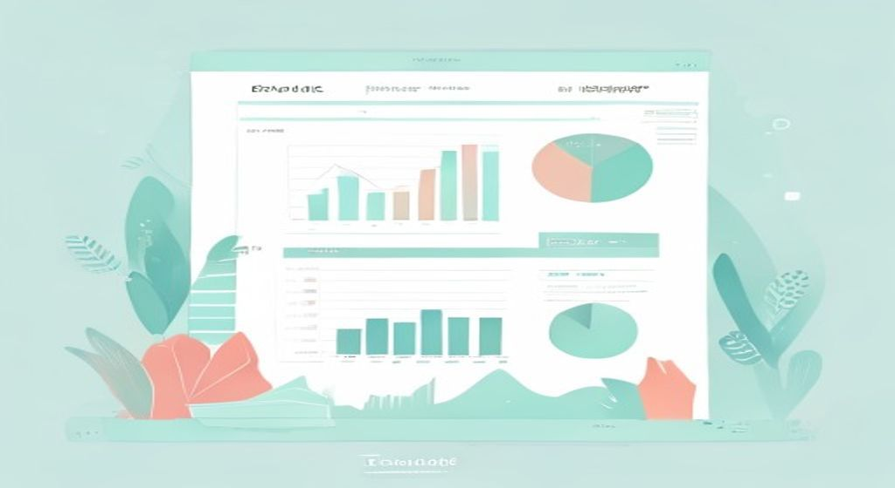
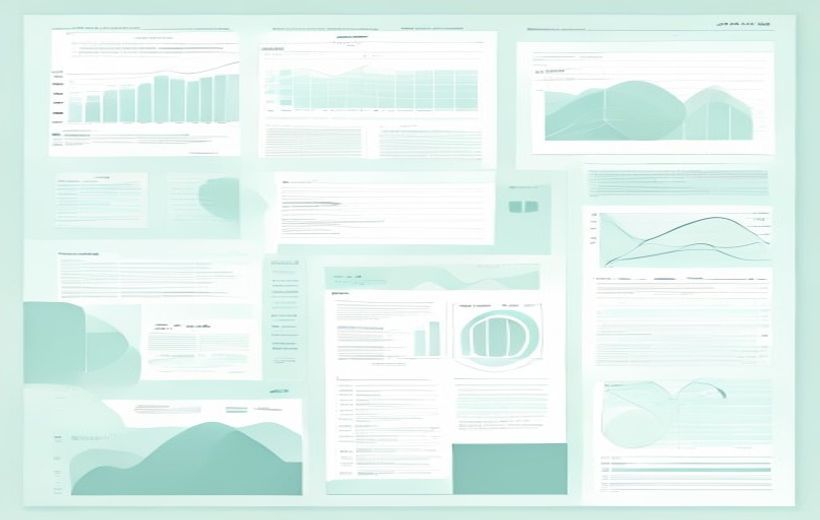
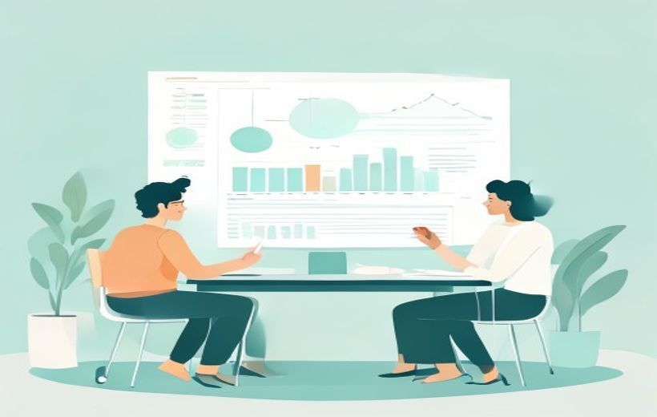

El informe final constituye la culminación del proceso de investigación comercial. Lo que cae en el examen: la función del informe en la investigación comercial (8.1), la estructura del informe final con sus anexos (8.2), las características de un buen informe (8.3) y la relación con los temas previos (8.5).

El informe final convierte todos los datos recogidos en conocimiento útil para tomar decisiones.
El informe final es la culminación del proceso de investigación: su valor no está en recopilar datos, sino en transformarlos en conocimiento útil para la acción empresarial; en el examen lo importante es saber sus funciones, su estructura (anexos incluidos), las características de un buen informe y cómo integra todos los temas previos.
🧠 Los conceptos
Despliega cada tarjeta, léela con calma y márcala como entendida. La barra de arriba irá subiendo. Las tarjetas con la etiqueta CAE son las que entran en el examen del 8-jun.
Antes de entrar en lo que cae, la base del PDF. El informe final constituye la culminación del proceso de investigación comercial y representa el medio a través del cual los resultados obtenidos se comunican a los distintos públicos interesados. No se trata únicamente de un documento escrito, sino de un recurso estratégico que orienta la toma de decisiones en marketing y comunicación.
La calidad del informe depende tanto del rigor metodológico aplicado en las fases previas como de la capacidad del investigador para sintetizar, interpretar y presentar los hallazgos de manera clara y persuasiva (Malhotra, 2020). El informe final no solo recopila los hallazgos, sino que los convierte en conocimiento útil y procesable para las partes interesadas (Blanco, 2017).
El informe final constituye la culminación del proceso de investigación y su valor no reside únicamente en la recopilación de datos, sino en la capacidad de transformarlos en conocimiento útil para la acción empresarial. En este sentido, la función del informe puede entenderse como un puente entre la labor técnica del investigador y la dimensión estratégica de la empresa. Tal como apuntan Esteban Talaya et al. (2014), el informe debe ser un documento que ofrezca información comprensible, relevante y directamente vinculada con los objetivos que motivaron la investigación.

Figura 1. Esquema de la función del informe final — el ciclo comienza con la recopilación y síntesis de la información y continúa en sentido horario hasta la aplicación de los resultados y la toma de decisiones (proceso iterativo).
El PDF desarrolla cinco funciones, que cierra con la frase: «el informe final cumple funciones de información objetiva, orientación estratégica, documentación del proceso, formación académica y prospectiva empresarial»:
La Tabla 1. Funciones del informe final y su utilidad práctica sintetiza cada función con su descripción y su utilidad práctica para la empresa:
| Función del informe | Descripción | Utilidad práctica para la empresa |
|---|---|---|
| Información objetiva | Presentar hallazgos con base en datos verificables | Garantiza credibilidad en la toma de decisiones |
| Orientación estratégica | Conectar resultados con recomendaciones | Define líneas de acción en marketing |
| Documentación del proceso | Describir técnicas, limitaciones y alcances | Facilita replicabilidad y transparencia |
| Formación académica | Desarrollar capacidad de síntesis y sistematización | Mejora competencias en comunicación empresarial |
| Prospectiva empresarial | Anticipar tendencias futuras | Permite planificar estrategias a largo plazo |
La estructura del informe final en investigación comercial constituye la columna vertebral que asegura la claridad, la coherencia y la utilidad del documento. No se trata de un simple esquema formal, sino de un diseño pensado para guiar al lector desde la definición del problema hasta la propuesta de acción empresarial (Barbosa, Argote y De Ávila, 2014).
Según Fernández Nogales (2022) y Zikmund & Babin (2016), una estructura bien definida permite que el lector no especializado en investigación —como directivos de marketing o responsables de producto— acceda a la información clave sin necesidad de profundizar en aspectos técnicos. Esto convierte al informe en una herramienta técnica y a la vez gerencial, que atiende a públicos con diferentes niveles de conocimiento.
Elementos fundamentales de la estructura

Figura 2. Anatomía del informe final — estructura secuencial que debe seguir el informe, desde la portada hasta los anexos, mostrando cada apartado como una etapa clave del documento.
| Elemento | Qué incluye / para qué sirve (según el PDF) |
|---|---|
| 1. Portada e índice | La portada identifica el proyecto: título, organización o equipo y fecha de presentación. El índice organiza el documento y facilita la navegación. Dan una primera impresión de profesionalidad y orden. |
| 2. Resumen ejecutivo | Suele ser el primero y, en ocasiones, el único leído por los responsables de decisiones. Condensa objetivos, metodología, principales hallazgos y recomendaciones estratégicas. Una o dos páginas máximo, en lenguaje sencillo pero riguroso. Ejemplo del PDF: en un informe sobre la percepción hacia los vehículos eléctricos, debería señalar si hay predisposición a la compra, las barreras (precio, infraestructura de recarga) y qué estrategias podrían superarlas. |
| 3. Introducción y planteamiento del problema | Sitúa al lector en el contexto: qué motivó el estudio, los objetivos específicos y las preguntas de investigación. Justifica la relevancia del problema y la vincula con la organización. |
| 4. Metodología | Describe en detalle las fuentes, las técnicas de recogida de datos y los procedimientos de análisis. El rigor metodológico permite evaluar fiabilidad y validez; documenta el proceso y legitima las conclusiones. Ejemplo del PDF: cuestionario autoadministrado digital, muestra representativa de 1.200 consumidores en España, análisis con regresión logística en SPSS, recogida en un único trimestre. |
| 5. Resultados | Presenta de forma sistemática los hallazgos más relevantes. Tablas, gráficas y cuadros comparativos traducen las cifras en información comprensible. Deben seguir el mismo orden que los objetivos para mantener el hilo conductor. |
| 6. Discusión | Interpreta la información recogida, contrastándola con las hipótesis iniciales, los objetivos y, si es posible, investigaciones previas. No solo muestra qué ocurre, sino por qué ocurre y qué significa para la organización. |
| 7. Conclusiones y recomendaciones | Conclusiones = síntesis interpretativa de los resultados, vinculadas a los objetivos. Recomendaciones = acciones concretas derivadas de las conclusiones. (Se detalla más abajo.) |
| 8. Anexos | Materiales de apoyo: cuestionarios, guías de entrevistas, bases de datos resumidas o informes técnicos. Aunque no todos los revisan, sirven para verificar el proceso o replicarlo en el futuro. (Se detalla en la tarjeta siguiente.) |
Conclusiones y recomendaciones (apartado 7)
Según el PDF, las conclusiones constituyen la síntesis interpretativa de los resultados del estudio y deben responder directamente a los objetivos planteados. Una buena conclusión debe incluir:
Las recomendaciones, por su parte, derivan de las conclusiones y orientan acciones concretas. Para ello, deben:
Ejemplo aplicado del PDF (panel de lácteos en España): el panel sobre consumo de productos lácteos en España muestra una caída progresiva en la compra de leche tradicional en los últimos cinco años, acompañada de un crecimiento en el consumo de alternativas vegetales.
— Conclusión: el cambio de hábito evidencia una tendencia hacia opciones más saludables y sostenibles, especialmente entre consumidores jóvenes.
— Recomendación: las marcas tradicionales de lácteos deberían diversificar su portafolio hacia bebidas vegetales o fortificadas, reforzando la comunicación en torno a sostenibilidad y bienestar.
El PDF acompaña este apartado con la Tabla 3. Ejemplo aplicado: de datos a conclusiones, implicaciones y recomendaciones (el PDF usa el número «Tabla 3» también para la tabla de características más adelante; la identifico por su título):
| Hallazgo (dato) | Conclusión | Implicación | Recomendación |
|---|---|---|---|
| El 65 % de consumidores considera elevado el precio de menús saludables | Existe percepción negativa del precio | Riesgo de pérdida de clientes sensibles al precio | Ajustar precios en segmentos específicos y comunicar valor nutricional |
| El 40 % muestra interés en bebidas vegetales | Cambio en preferencias hacia alternativas saludables | Oportunidad de diversificación | Introducir líneas de bebidas vegetales en la cartera |
Los anexos son el elemento 8 de la estructura del informe (apartado 8.2 del PDF). El texto del PDF los describe así: «Incluyen materiales de apoyo como cuestionarios, guías de entrevistas, bases de datos resumidas o informes técnicos. Aunque no todos los lectores revisan esta sección, resulta de gran utilidad para quienes deseen verificar el proceso de investigación o replicarlo en el futuro».
Qué incluyen (según el PDF)
Para qué sirven
En el apartado «Importancia de la coherencia estructural», el PDF precisa el papel de cada parte: «mientras el resumen ejecutivo orienta a los decisores, la metodología aporta transparencia y los anexos sirven como respaldo técnico».
Un informe final de investigación comercial no es únicamente un documento que sintetiza los hallazgos de un estudio: constituye también un instrumento de comunicación estratégica que debe responder a las necesidades de distintos públicos —desde investigadores que desean revisar la metodología hasta directivos que requieren recomendaciones prácticas—. Por ello debe reunir una serie de características que garanticen su utilidad, credibilidad y aplicabilidad. El PDF desarrolla seis, con estos mismos títulos:
El PDF cierra el apartado así: «las características de un buen informe pueden agruparse en seis dimensiones clave: claridad, coherencia, rigor, relevancia, visualización y objetividad».
Estas dimensiones se resumen en la Tabla 3. Características de un buen informe y su impacto (la cito por su título, ya que el PDF reutiliza el número «Tabla 3»), que distingue el impacto en el investigador y en la empresa:
| Característica | Descripción | Impacto en el investigador | Impacto en la empresa |
|---|---|---|---|
| Claridad | Lenguaje preciso y comprensible | Evita ambigüedades | Facilita comprensión ejecutiva |
| Coherencia | Secuencia lógica de apartados | Permite trazabilidad | Favorece confianza en resultados |
| Rigor | Detalle de metodología y análisis | Garantiza replicabilidad | Aporta legitimidad a recomendaciones |
| Relevancia | Enfoque en objetivos de investigación | Centra el análisis | Alinea hallazgos con decisiones estratégicas |
| Visualización | Uso de tablas, gráficos y diagramas | Apoya interpretación analítica | Mejora presentaciones a dirección |
| Objetividad | Conclusiones basadas en datos | Reduce sesgos | Genera credibilidad |
Este apartado sirve de contexto / ejemplos para el examen. El PDF recuerda que el informe final «no solo es un producto académico, sino una herramienta esencial en la práctica profesional del marketing y la investigación comercial», y distingue cinco contextos de aplicación (Figura 5. Contextos de aplicación del informe final):
El informe final no puede entenderse como un elemento aislado dentro del proceso de investigación comercial; es, en realidad, el resultado integrador de todas las fases trabajadas en los temas anteriores del curso. Cada bloque teórico aporta insumos que confluyen en este documento, convirtiéndolo en un producto sintético, interpretativo y estratégico que refleja el recorrido metodológico completo. El PDF detalla qué aporta cada tema:
| Tema del curso | Qué aporta al informe (según el PDF) |
|---|---|
| Tema 1 · Naturaleza y características de la IC | El marco conceptual que justifica la necesidad del informe: dar cuenta de cómo una investigación, iniciada desde un problema o necesidad de información, aporta conocimiento aplicable. |
| Tema 2 · Organización y planificación | Objetivos, hipótesis, cronograma y recursos. El informe es donde se verifica si la planificación se cumplió y si los objetivos se alcanzaron. |
| Tema 3 · Fuentes de información | Determina la calidad de los insumos: un informe sólido señala de qué fuentes proceden los datos, su grado de fiabilidad y cómo se integraron. |
| Temas 4 y 5 · Cualitativas y tecnologías aplicadas | Matices interpretativos que no captan los datos cuantitativos: testimonios de entrevistas en profundidad, mapas de asociaciones de marca o resultados de neuromarketing combinados con estadística descriptiva. |
| Temas 6 y 7 · Encuesta y paneles | La base estadística: las encuestas aportan una instantánea transversal de un momento concreto; los paneles, la evolución longitudinal de los comportamientos. El informe los organiza, compara y transforma en recomendaciones. |
De esta manera, el informe final actúa como hilo conductor que articula todos los contenidos del curso, desde la definición de los problemas hasta la integración de resultados cualitativos y cuantitativos. Para el estudiante, redactarlo no es un ejercicio mecánico, sino una síntesis reflexiva que exige comprender, conectar y aplicar lo aprendido en los siete temas previos.
🃏 Flashcards
Toca cada tarjeta para girarla. Tapa la definición con la mano y comprueba si te la sabes. Todas son del contenido del PDF (8.1, 8.2, 8.3 y 8.5).
✅ Test rápido
7 preguntas tipo examen sobre lo que cae. Elige una opción y te corrige al momento con la explicación. Todo se justifica con el PDF de ESIC del Tema 8.
⭐ Preguntas del final de la presentación
El PDF oficial del Tema 8 no incluye diapositivas de «Autoevaluación» con preguntas. Se ofrecen 3 preguntas teórico-prácticas de práctica (2 ptos c/u), del estilo que cae el 8-jun, resueltas íntegramente con contenido del PDF (8.1, 8.2 y 8.3).
El informe final actúa como puente entre la labor técnica del investigador y la dimensión estratégica de la empresa; su valor no reside únicamente en la recopilación de datos, sino en transformarlos en conocimiento útil para la acción empresarial. La Tabla 1. Funciones del informe final y su utilidad práctica recoge cinco funciones:
Todas convergen en que la investigación no sea recogida aislada de datos, sino una herramienta al servicio de la toma de decisiones fundamentadas.
La estructura es la columna vertebral del informe (guía al lector del problema a la acción) y sigue ocho elementos fundamentales, como ilustra la Figura 2. Anatomía del informe final:
La coherencia entre las ocho secciones es lo que hace que el informe se perciba como riguroso y profesional (el resumen ejecutivo orienta a los decisores, la metodología aporta transparencia y los anexos sirven de respaldo técnico).
El PDF agrupa la calidad en seis dimensiones clave, resumidas en la Tabla 3. Características de un buen informe y su impacto y en la Figura. Triángulo de la calidad del informe (gráfico radar):
Juntas convierten el documento en un instrumento estratégico que guía la toma de decisiones y potencia la capacidad de las organizaciones para responder a un mercado en constante cambio.